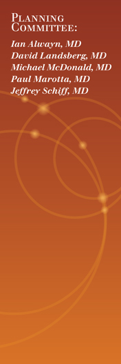

|  |
Your Fellow nominations are now being accepted for
the 2016 CST/Astellas Canadian Transplant Fellows Symposium, taking place at the Hilton Quebec Hotel.
Click the link below to nominate transplant Fellows
(or Trainees) from your program. There is no limit to the number of nominees you think will benefit from this symposium and networking luncheon.
Click here for nomination form
If you do not plan to nominate anyone for this year's program, kindly reply to this email so that we may
update our records accordingly.
Email information is required to ensure your Fellow(s) receive confirmation and online registration details.
Receipt of your nomination(s) would be appreciated by Monday, June 27.
|
Agenda topics include:
.
Introduction and Overview of the Current Landscape of Transplantation in Canada
.
Expanding the Donor Pool
.
Critical Review of Randomized Clinical Trials in Transplantation
.
Pre-transplant Cardiovascular Assessment
.
Management of Renal Dysfunction in Extra Renal Transplants
.
Post-transplant Complications: Metabolic Complications
.
Concurrent Case Study Sessions:
• Pediatric Kidney and Liver Transplantation
• Kidney Transplantation
• Liver Transplantation
• Adult and Pediatric Heart Transplantation
• Adult and Pediatric Lung Transplantation
.
Immunology of Transplantation Rejection
.
HLA
.
CMV Prophylaxis
.
Pre-transplant Optimization
.
Viral Hepatitis in Non-hepatic Solid Organ Transplantation (HBV and HCV)
.
The Future of Transplantation (physician-assisted death, tolerance) |
|
If you have any immediate questions, please contact
Sarah McEachnie at smceachnie@stacom.com.
Funded through an educational grant from

|
In partnership with the

|
|
|
|